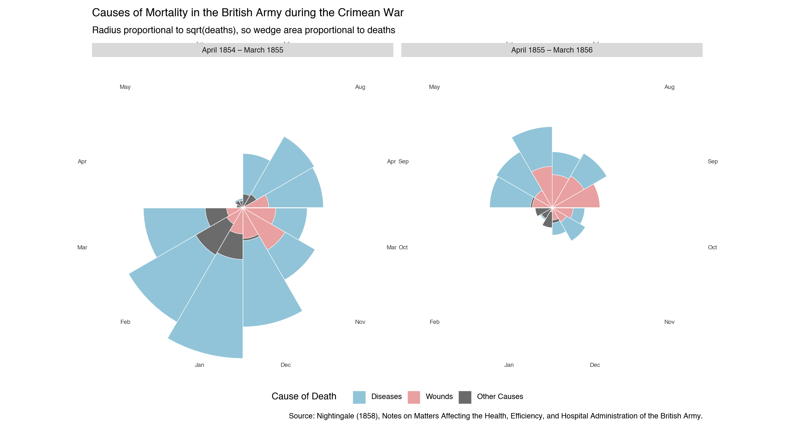
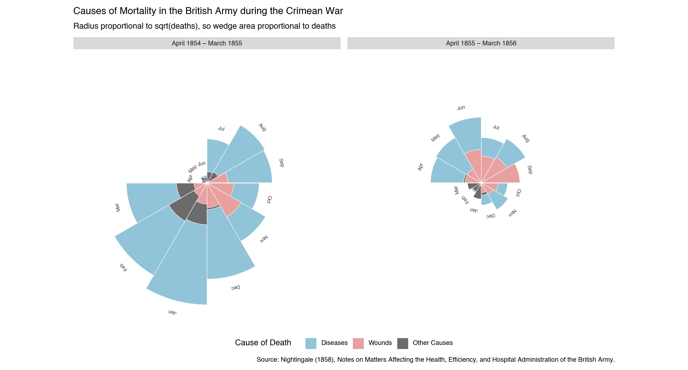

import math
import polars as pl
import plotnine_polars as p9
import socviz_pl as sv
from plotnine_polars import aes6 Florence Nightingale’s Rose Diagram
Florence Nightingale (1820–1910) was a pioneer of statistical graphics as well as nursing. Her most celebrated chart—the diagram of the causes of mortality in the army in the East (1858)—used a polar-area plot, now often called a rose diagram or coxcomb chart, to argue that preventable disease rather than combat wounds was killing British soldiers in the Crimean War. By encoding the data as overlapping wedges rather than tables, she made the case visually compelling enough to prompt lasting sanitary reforms.
The chart covers 24 months (April 1854 to March 1856) and divides them into two 12-month periods. Each angular slice corresponds to one calendar month. Three causes of death are drawn as overlapping wedge-shaped bars — largest behind smallest — so that each is independently visible. The radius of each wedge is proportional to the square root of the death count, so the wedge area is proportional to deaths, matching Nightingale’s original encoding:
- Diseases — preventable (zymotic) diseases, chiefly cholera and typhus
- Wounds — deaths from combat injuries
- Other Causes — all remaining causes
The dramatic collapse of the blue (disease) bars between the two panels reflects the sanitary improvements introduced in March 1855.
Caution
All of the examples on this page require the coord-polar branch of iangow/plotnine. The standard version of plotnine does not include the coord_polar() and coord_radial() functions used here.
Note
In this chapter, I use plotnine_polars, a package that allows me to use method chains to access most of the functionality of plotnine. I also use socviz_pl, a small package I created to give me the equivalent of Kieran Healy’s socviz R package. (In this chapter, socviz_pl is simply the convenient place I stuck the nightingale I use below.)
6.1 Data
The data below are Florence Nightingale’s published death counts for the British army in the Crimea. Each row in the final long-format table records the number of deaths from one cause in one month of one year.
nightingale = sv.load_data("nightingale")To create overlapping bars with geom_col(position="identity"), the data must be sorted so that the largest value for each month comes first—it is drawn behind, letting the smaller wedges appear on top. Note that month_label is an Enum with categories in April-to-March order, so Polars sorts it correctly without a separate ordering column.
month_enum = pl.Enum([
"Apr", "May", "Jun", "Jul", "Aug", "Sep",
"Oct", "Nov", "Dec", "Jan", "Feb", "Mar",
])
ng_long = (
nightingale
.unpivot(
on=["diseases", "wounds", "other_causes"],
index=["month", "period"],
variable_name="cause",
value_name="deaths",
)
.with_columns(
month_label=pl.col("month").dt.strftime("%b").cast(month_enum),
)
.sort(["period", "month_label", "deaths"], descending=[False, False, True])
)
months_ordered = list(month_enum.categories)6.2 The Rose Diagram
cause_colors = {
"diseases": "#91C4D8",
"wounds": "#E8A0A0",
"other_causes": "#6B6B6B",
}6.2.1 Basic Version
The simplest approach uses coord_radial’s built-in theta_labels=True argument, which reads the \(x\)-scale’s breaks and labels and places them around the outer rim of the circle.
(
ng_long
.ggplot(aes(x="month_label", y="deaths", fill="cause"))
.geom_col(position="identity", width=1, color="white", size=0.3)
.scale_x_discrete(limits=months_ordered)
.scale_y_sqrt()
.scale_fill_manual(
values=cause_colors,
breaks=["diseases", "wounds", "other_causes"],
labels=["Diseases", "Wounds", "Other Causes"],
name="Cause of Death",
)
.coord_radial(
theta="x",
start=3 * math.pi / 2,
expand=False,
theta_labels=True,
)
.facet_wrap("~period")
.labs(
title="Causes of Mortality in the British Army during the Crimean War",
subtitle="Radius proportional to sqrt(deaths), so wedge area proportional to deaths",
caption=(
"Source: Nightingale (1858), Notes on Matters Affecting the Health, "
"Efficiency, and Hospital Administration of the British Army."
),
)
.add_theme(
figure_size=(13, 7),
axis_title=p9.element_blank(),
axis_text_x=p9.element_text(size=7, color="#444444"),
axis_text_y=p9.element_blank(),
axis_ticks=p9.element_blank(),
panel_grid_major=p9.element_blank(),
panel_background=p9.element_blank(),
panel_border=p9.element_blank(),
legend_position="bottom",
)
)
6.2.2 Refined Version
For labels that sit at the tip of each month’s tallest bar—closer to the data, like in the original diagram—I use .geom_text() with pre-computed positions and rotation angles. Each label is placed pad_r units beyond the largest bar for that month (in square-root space), and rotated to read naturally at its position around the circle. The \(y\)-axis upper limit is extended to accommodate these floating labels.
def _radial_angle(idx, n=12, start_deg=270):
"""Text rotation angle (degrees) for the label at arc slice idx."""
return -(start_deg + (idx + 0.5) / n * 360) % 360
month_angles_df = pl.DataFrame({
"month_label": pl.Series(months_ordered, dtype=month_enum),
"angle": [_radial_angle(i) for i in range(12)],
})
pad_r = 5
max_deaths_all = ng_long["deaths"].max()
y_upper = (math.sqrt(max_deaths_all) + pad_r) ** 2
# Label position: push pad_r units beyond bar tip in sqrt-radius space
label_df = (
ng_long
.group_by(["month_label", "period"])
.agg(pl.col("deaths").max().alias("max_deaths"))
.join(month_angles_df, on="month_label")
.with_columns(
label_y=(pl.col("max_deaths").sqrt() + pad_r).pow(2),
label=pl.col("month_label"),
)
)(
ng_long
.ggplot(aes(x="month_label", y="deaths", fill="cause"))
.geom_col(position="identity", width=1, color="white", size=0.3)
.geom_text(
data=label_df,
mapping=aes(x="month_label", y="label_y", label="label", angle="angle"),
size=7, color="#444444", ha="center", va="center", inherit_aes=False,
)
.scale_x_discrete(limits=months_ordered)
.scale_y_sqrt(limits=(0, y_upper))
.scale_fill_manual(
values=cause_colors,
breaks=["diseases", "wounds", "other_causes"],
labels=["Diseases", "Wounds", "Other Causes"],
name="Cause of Death",
)
.coord_radial(
theta="x",
start=3 * math.pi / 2,
expand=False,
)
.facet_wrap("~period")
.labs(
title="Causes of Mortality in the British Army during the Crimean War",
subtitle="Radius proportional to sqrt(deaths), so wedge area proportional to deaths",
caption=(
"Source: Nightingale (1858), Notes on Matters Affecting the Health, "
"Efficiency, and Hospital Administration of the British Army."
),
)
.add_theme(
figure_size=(13, 7),
axis_title=p9.element_blank(),
axis_text_x=p9.element_blank(),
axis_text_y=p9.element_blank(),
axis_ticks=p9.element_blank(),
panel_grid_major=p9.element_blank(),
panel_background=p9.element_blank(),
panel_border=p9.element_blank(),
legend_position="bottom",
)
)
I note a few design choices here:
- Chronological order — the 1854–55 panel appears on the left, so time reads left to right. The original Nightingale chart placed the post-reform period on the left so the reader encountered the improvement first.
- Shared legend and title —
.facet_wrap()naturally produces one legend and one overall title, avoiding duplicated ink. - Start angle —
start = 3π/2places the April slice at the 9 o’clock position so the June–July boundary falls at 12 o’clock, matching the layout of the original. plotnine measuresstartclockwise from 12 o’clock; the equivalent ggplot2 call usesstart = -π/2(ggplot2 measures counter-clockwise, so a negative value rotates clockwise). - Area encoding —
scale_y_sqrt()makes the radius proportional to √deaths, so the wedge area is proportional to deaths — exactly the encoding Nightingale used. Without the square-root transform the radius itself encodes deaths, which exaggerates large values.
Healy, Kieran. 2026. Data Visualization: A Practical Introduction. 2nd ed. Princeton University Press. https://socviz.co/.